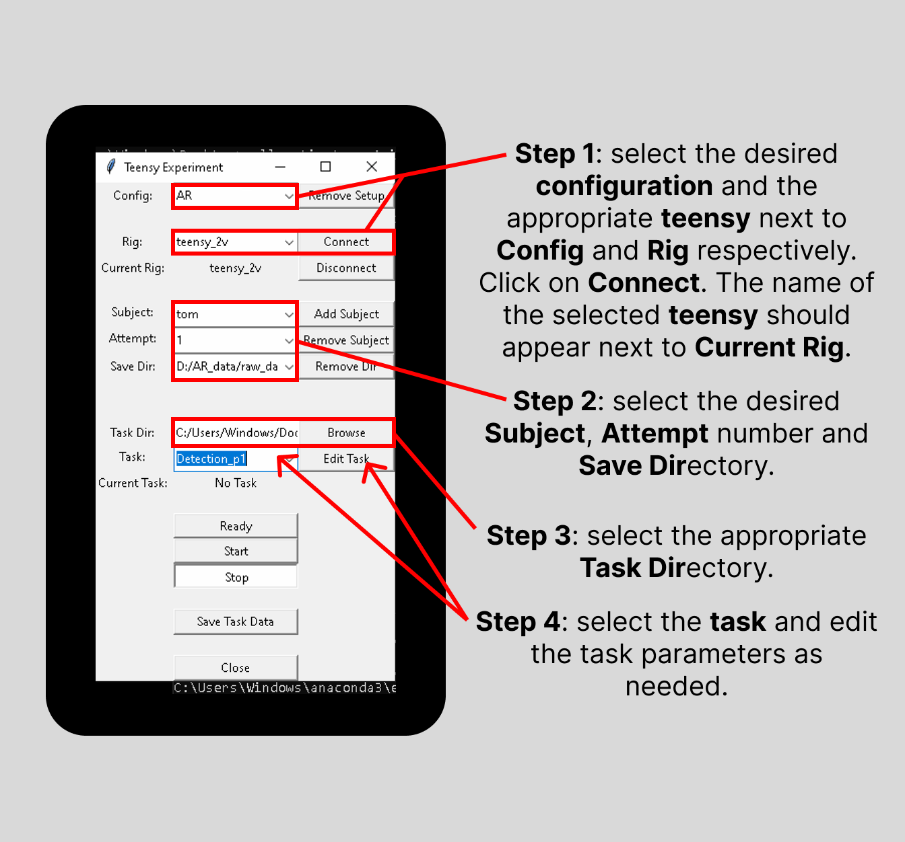
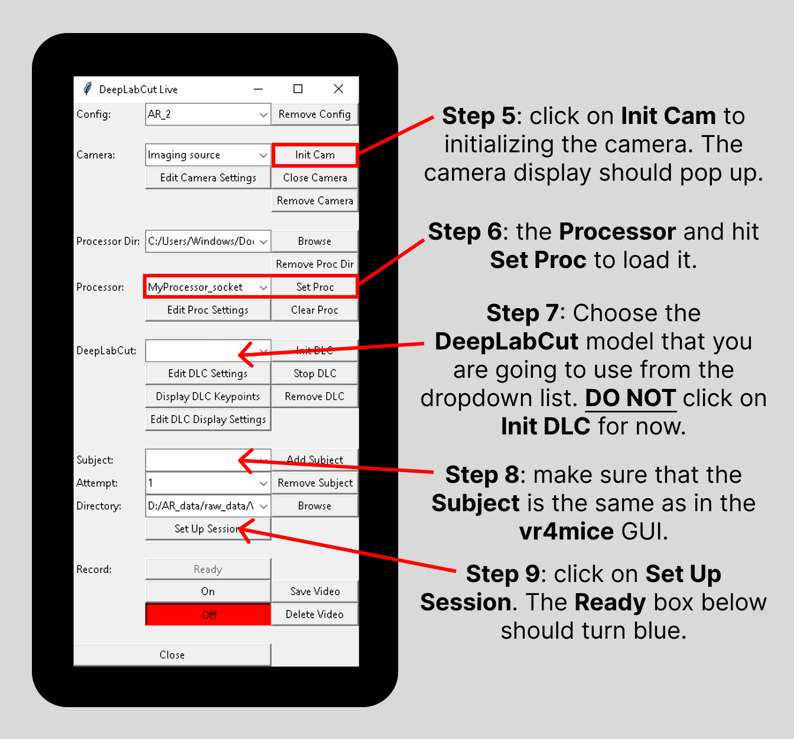
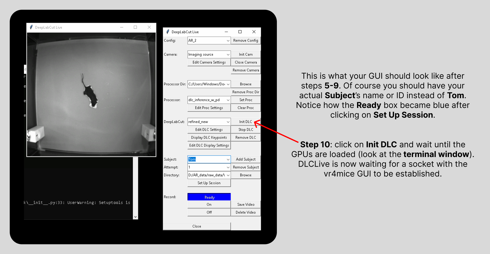
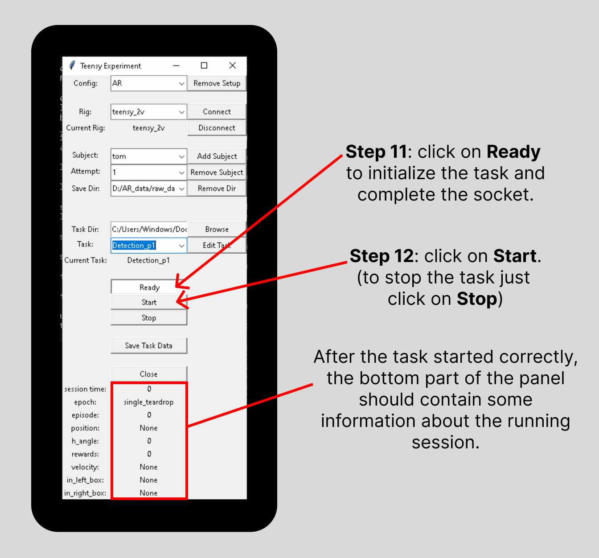
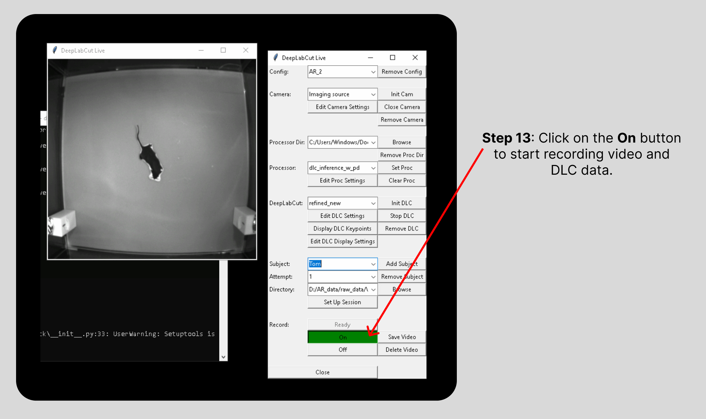
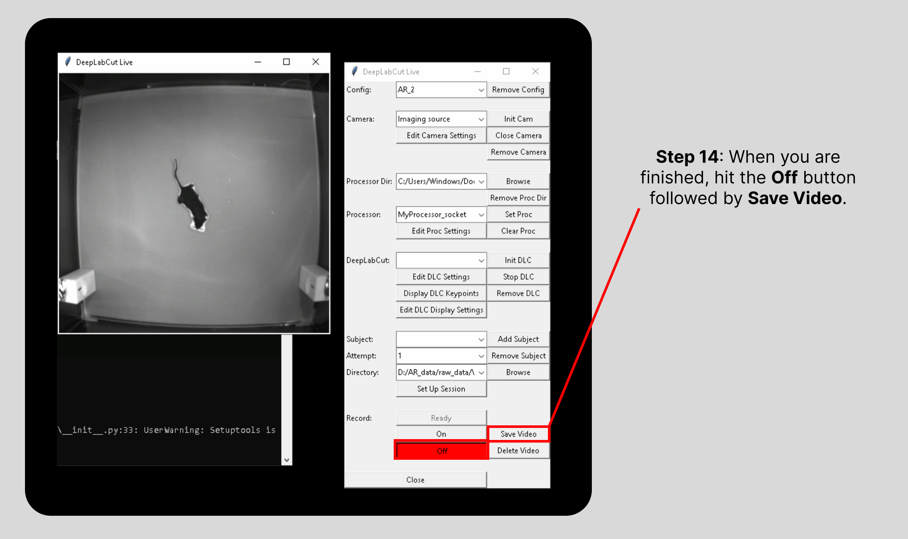
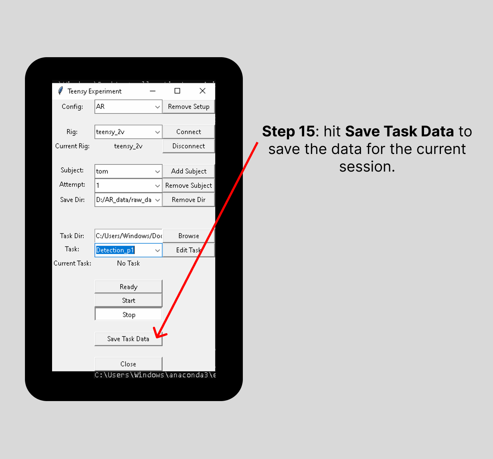

How to run a session#
Open the 2 GUIs#
VR4mice#
In a terminal window, activate your conda environment where you installed the vr4mice package source code like this:
conda activate env_name
Then, to start a session, you can run:
vr4mice
Finally, the GUI that controls the experiment logic should appear! Alternatively, you can add these commands to a .bat script so that all you need to do it click on an icon on your Desktop.
DeepLabCut-live#
In a second terminal window, activate your conda environment where you installed the dlclivegui package source code just like you did above for the vr4mice environment. Then, to start the GUI, you can run:
dlclivegui
This should open up the DLCLive GUI on your screen!
Note: close the program using the GUI’s “Stop”/”Close” buttons, and NOT via “crtl-C”/”crtl-Z”
Set up a session in the VR4mice GUI (aka Teensy Experiment)#
{kind=link}

Select the desired configuration, the appropriate Rig and hit “Connect”. (the name of the selected Rig should appear next to Current Rig)
Select the Subject’s ID or name, the Attempt number and define the Save Directory.
Select the wanted Task Directory.
Define the Task and edit its parameters as needed.
Open the DeepLabCut-live GUI#
{kind=link}

Initialize the camera by clicking the “Init Cam” button. (a window should pop up with an a live video stream from the camera)
Select the Processor file and hit “Set Proc” to load it.
Choose the DeepLabCut model that you are going to use from the dropdown list. (DO NOT hit Init DLC for now)
Select the Subject’s name (or ID) and make sure it matches the one on the vr4mice GUI.
Hit “Set Up Session”. (the Ready box below should turn blue)
{kind=link}

Tip
Now, before initializing DLC, it would be a great time to take the selected mouse and put it gently (with tube handling) in the arena. Avoid forcing the mouse onto the platform, slowly approach with the tube and let the mouse naturally come out and into the arena.
Hit “Init DLC” and wait until the GPUs are loaded (look at the terminal window). DLCLive is now waiting for a socket with vr4mice GUI to be established.
Launch OBS screen recording#
Open OBS and start recording the screen (the screen where you are displaying the game on the rig). If you don’t have OBS yet, check out this link to download it.
Warning
Make sure to set the recording FPS (frame rate per second) to 120.
On the VR4mice window#
{kind=link}

Click on “Ready” to initialize the task and complete the socket.
Click on “Start”. (if you need to manually stop the task, hit “Stop”. Otherwise, the task will stop automatically)
After the task started correctly, the bottom part of the panel should contain some information about the running session.
On the DeepLabCut-live window#
{kind=link}

Hit “On” to start recording video and DLC data.
Saving data#
The following steps have to be performed once the experimenter wants to end the session and save the recorded data (they are the same steps even if the session was started by mistake or with the wrong configuration parameters and has to be stopped, the only difference will be in whether the data should be saved or not). Here the order is important, make sure to start with the DeepLabCut-live GUI followed by the VR4mice GUI and OBS.
On the DeepLabCut-live window:#
{kind=link}

Hit the Record “Off” button followed by “Save Video”.
4 different data types will be saved in the directory specified in the DLCLive-GUI:
.avi= the raw video_TS.npy= the time steps for each of the recorded frames.h5= the recorded DLC key-pointsPROC= the processed dlc key-points which get sent to the unity game
On the VR4mice window:#
{kind=link}

To save the data, hit “Stop” followed by “Save Task Data”.
Data will be saved to:
<your save directory>/<subject>_YYYY-MM-DD_<attempt>.pkl(pickle file)
Stop OBS screen recording#
Last but not least, go back to OBS and stop the screen recording you started earlier. This will automatically save the video to a default path. Normally it should be in the current user’s
Videosfolder. Make sure, after each session, to go to the aforementioned folder and rename the recorded video by inserting the name of the subject (i.e. mouse’s name) at the beginning and the attempt number at the end. The naming convention used isName_Date_Attempt.*(e.g.Nightingale_2024-07-28_1.*). The Date should already be present since it’s automatically added by the OBS software.Note: the date will have US format.
To run another session, repeat the above steps. Data from the previous session is still loaded (and can be saved again with a different file name by changing the subject or attempt) until a new task is initialized (i.e. until you click “Ready”). Usually you’ll need to run another mouse, thus meaning that Subject Name should be changed accordingly as well as the Attempt, which should be set back to 1 if not already. The task may also need to be changed since different mice may be at different training stages depending on the continuation criteria present in the protocol. After the new session parameters have been set, go back to step 9 here and repeat the steps from there.